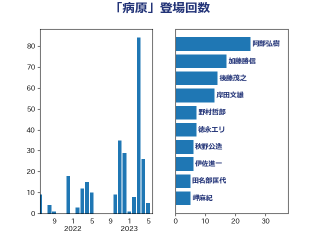

単語「病原」

| 阿部弘樹 | 日本維新の会 | 25 回 |
| 加藤勝信 | 自由民主党 | 17 回 |
| 後藤茂之 | 自由民主党 | 14 回 |
| 岸田文雄 | 自由民主党 | 13 回 |
| 野村哲郎 | 自由民主党 | 7 回 |
| 徳永エリ | 立憲民主党 | 7 回 |
| 秋野公造 | 公明党 | 6 回 |
| 伊佐進一 | 公明党 | 6 回 |
| 田名部匡代 | 立憲民主党 | 5 回 |
| 岬麻紀 | 日本維新の会 | 5 回 |
| 吉田統彦 | 立憲民主党 | 5 回 |
| 仁木博文 | 無所属 | 5 回 |
| 青柳陽一郎 | 立憲民主党 | 3 回 |
| 紙智子 | 日本共産党 | 3 回 |
| 末松信介 | 自由民主党 | 3 回 |
| 山本有二 | 自由民主党 | 3 回 |
| 金子恵美 | 立憲民主党 | 2 回 |
| 舟山康江 | 国民民主党 | 2 回 |
| 自見はなこ | 自由民主党 | 2 回 |
| 神谷裕 | 立憲民主党 | 2 回 |
| 武部新 | 自由民主党 | 2 回 |
| 梅村聡 | 日本維新の会 | 2 回 |
| 堀内詔子 | 自由民主党 | 2 回 |
| 上月良祐 | 自由民主党 | 2 回 |
| 高鳥修一 | 自由民主党 | 1 回 |
| 須藤元気 | 無所属 | 1 回 |
| 鈴木英敬 | 自由民主党 | 1 回 |
| 野間健 | 立憲民主党 | 1 回 |
| 野中厚 | 自由民主党 | 1 回 |
| 角田秀穂 | 公明党 | 1 回 |
| 藤木眞也 | 自由民主党 | 1 回 |
| 簗和生 | 自由民主党 | 1 回 |
| 稲富修二 | 立憲民主党 | 1 回 |
| 神田潤一 | 自由民主党 | 1 回 |
| 石井苗子 | 日本維新の会 | 1 回 |
| 石井準一 | 自由民主党 | 1 回 |
| 畦元将吾 | 自由民主党 | 1 回 |
| 田村智子 | 日本共産党 | 1 回 |
| 田村まみ | 国民民主党 | 1 回 |
| 田中健 | 国民民主党 | 1 回 |
| 水野素子 | 立憲民主党 | 1 回 |
| 柳本顕 | 自由民主党 | 1 回 |
| 柳ヶ瀬裕文 | 日本維新の会 | 1 回 |
| 星北斗 | 自由民主党 | 1 回 |
| 早稲田ゆき | 立憲民主党 | 1 回 |
| 日下正喜 | 公明党 | 1 回 |
| 斎藤アレックス | 国民民主党 | 1 回 |
| 庄子賢一 | 公明党 | 1 回 |
| 川田龍平 | 立憲民主党 | 1 回 |
| 山田勝彦 | 立憲民主党 | 1 回 |
| 宮本徹 | 日本共産党 | 1 回 |
| 宮崎雅夫 | 自由民主党 | 1 回 |
| 天畠大輔 | れいわ新選組 | 1 回 |
| 塩田博昭 | 公明党 | 1 回 |
| 塩崎彰久 | 自由民主党 | 1 回 |
| 国定勇人 | 自由民主党 | 1 回 |
| 吉田とも代 | 日本維新の会 | 1 回 |
| 勝俣孝明 | 自由民主党 | 1 回 |
| 加藤明良 | 自由民主党 | 1 回 |
| 倉林明子 | 日本共産党 | 1 回 |
| 井坂信彦 | 立憲民主党 | 1 回 |
| 中島克仁 | 立憲民主党 | 1 回 |
| 上田清司 | 国民民主党 | 1 回 |
| 一谷勇一郎 | 日本維新の会 | 1 回 |